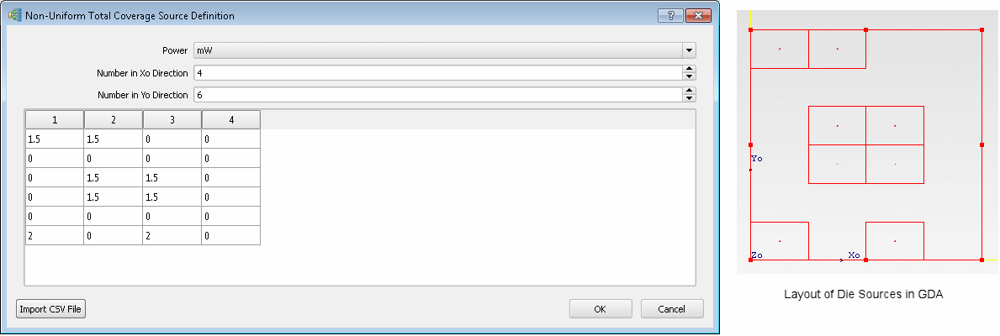

Non-uniform power
dissipation is modeled by defining the power output at selected
rectangular locations across the face of the die.
Procedure
- In the Die Construction property
sheet, select Total Coverage Sources Source Type.
- Click the Source Definition Click
to Edit button.
The Non-Uniform Total Coverage
Source Definition dialog box is opened.
- Select the desired units for
Power Unit.
- Depending on the how you want
to enter data, choose one of the following methods.
If you want to...
|
Do
the following:
|
|---|
Enter data manually.
|
Enter values for Number in Xo Direction and
Number in Yo Direction.
The number of table rows and columns changes.
Enter power values in the table as required.
|
Enter data by CSV file import.
|
Click Import CSV File.
Navigate to, and select, a valid CSV file
and click Open.
|
- Click OK to
save the data and close the Non-Uniform Total Coverage Source Definition dialog
box.
Results
The Total
Power value in the Construction tab
of the Die property sheet is updated to show the total calculated
power.
The drawing board shows the
layout of the sources on the Die surface, for example, see Figure 1.
Figure 1. Locations of Total Coverage
Sources